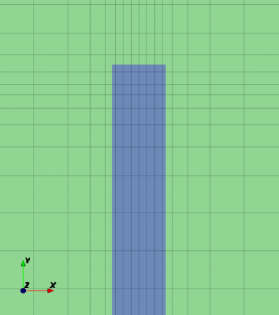
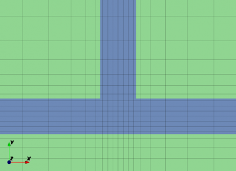
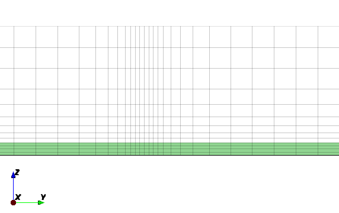

Tutorial: Microstrip Notch Filter
From openEMS
- Download the latest matlab file using gitweb: MSL_NotchFilter.m
- Simulation Time: ~ 2 min

We will cover in this tutorial:
- setup a microstrip line (MSL) and MSL port
- apply an inhomogeneous mesh used for improved accuracy and simulation speed
- calculate the S-Parameter of the filter
Contents |
First Steps
- Install and verify your openEMS installation: Tutorial: First Steps
Matlab Simulation Script
- Start the script within an empty environment:
close all clear clc
- Setup the simulation & geometrical parameter
physical_constants; unit = 1e-6; % specify everything in um MSL_length = 50000; MSL_width = 600; substrate_thickness = 254; substrate_epr = 3.66; stub_length = 12e3; f_max = 7e9;
- Setup the FDTD parameter including the excitation time signal and boundary conditions
FDTD = InitFDTD(); FDTD = SetGaussExcite( FDTD, f_max/2, f_max/2 ); BC = {'PML_8' 'PML_8' 'MUR' 'MUR' 'PEC' 'MUR'}; FDTD = SetBoundaryCond( FDTD, BC );
- Setup the inhomogeneous FDTD mesh, including an improved handling of the thin metal edges by using two mesh lines, one line is located 1/3 inside and the other one 2/3 outside of the thin metal.
CSX = InitCSX(); resolution = c0/(f_max*sqrt(substrate_epr))/unit /50; % resolution of lambda/50 mesh.x = SmoothMeshLines( [0 MSL_width/2+[resolution/3 -resolution/3*2]/4], resolution/4, 1.5 ,0 ); mesh.x = SmoothMeshLines( [-MSL_length -mesh.x mesh.x MSL_length], resolution, 1.5 ,0 ); mesh.y = SmoothMeshLines( [0 MSL_width/2+[-resolution/3 +resolution/3*2]/4], resolution/4 , 1.5 ,0); mesh.y = SmoothMeshLines( [-15*MSL_width -mesh.y mesh.y 15*MSL_width+stub_length], resolution, 1.5 ,0); mesh.z = SmoothMeshLines( [linspace(0,substrate_thickness,5) 10*substrate_thickness], resolution ); CSX = DefineRectGrid( CSX, unit, mesh );
|

|

|
- Add the MSL substrate
CSX = AddMaterial( CSX, 'RO4350B' ); CSX = SetMaterialProperty( CSX, 'RO4350B', 'Epsilon', substrate_epr ); start = [mesh.x(1), mesh.y(1), 0]; stop = [mesh.x(end), mesh.y(end), substrate_thickness]; CSX = AddBox( CSX, 'RO4350B', 0, start, stop );
|

|
- Add the two MSL ports
It is important to note that the thru-line is not explicitly defined (as is the stub). Instead, the thru-line is formed by defining two ports which meet at x = 0. The z-coordinate of the metal layer is at portstart(3).
These ports are terminated by PML boundary conditions on the -x and +x planes. Normally the measurement plane of a microstrip port is (portstart(1) + portstop(1))/2 but in this case it is moved to MSL_length/3. Details of the ports are visible with CSXGeomPlot and by turning the PEC layer off, turning on voltage probes, and zooming in.
CSX = AddMetal( CSX, 'PEC' ); portstart = [ mesh.x(1), -MSL_width/2, substrate_thickness]; portstop = [ 0, MSL_width/2, 0]; [CSX,port{1}] = AddMSLPort( CSX, 999, 1, 'PEC', portstart, portstop, 0, [0 0 -1], ... 'ExcitePort', 'excite', 'FeedShift', 10*resolution, 'MeasPlaneShift', MSL_length/3); portstart = [mesh.x(end), -MSL_width/2, substrate_thickness]; portstop = [0 , MSL_width/2, 0]; [CSX,port{2}] = AddMSLPort( CSX, 999, 2, 'PEC', portstart, portstop, 0, [0 0 -1], 'MeasPlaneShift', MSL_length/3 );
- Add the open-ended stub with the given length
start = [-MSL_width/2, MSL_width/2, substrate_thickness]; stop = [ MSL_width/2, MSL_width/2+stub_length, substrate_thickness]; CSX = AddBox( CSX, 'PEC', 999, start, stop );
- Create the simulation folder/ write the xml file/ View the file using AppCSXCAD and run openEMS
Sim_Path = 'tmp'; Sim_CSX = 'msl.xml'; [status, message, messageid] = rmdir( Sim_Path, 's' ); % clear previous directory [status, message, messageid] = mkdir( Sim_Path ); % create empty simulation folder WriteOpenEMS( [Sim_Path '/' Sim_CSX], FDTD, CSX ); CSXGeomPlot( [Sim_Path '/' Sim_CSX] ); RunOpenEMS( Sim_Path, Sim_CSX );
- Do the post-processing: Read the port voltages & currents and calculate the port characteristics.
close all f = linspace( 1e6, f_max, 1601 ); port = calcPort( port, Sim_Path, f, 'RefImpedance', 50); s11 = port{1}.uf.ref./ port{1}.uf.inc; s21 = port{2}.uf.ref./ port{1}.uf.inc; plot(f/1e9,20*log10(abs(s11)),'k-','LineWidth',2); hold on; grid on; plot(f/1e9,20*log10(abs(s21)),'r--','LineWidth',2); legend('S_{11}','S_{21}'); ylabel('S-Parameter (dB)','FontSize',12); xlabel('frequency (GHz) \rightarrow','FontSize',12); ylim([-40 2]);
Discussion
This simulation deliberately mis-aligned the mesh with the edges of the microstrip conductor. This can be seen in the images above showing the grid cells and the conducting layer. This is done to compensate for the peaking of the surface current at the edge of strip lines without having to resort to very small grid cells which would greatly increase the number of time steps required. With the 1/3 : 2/3 grid offset the edge cells defining the microstrip line effectively increase the surface current while using a relatively coarse mesh.
This can be examined in some detail by removing the stub, adjusting the mesh, and comparing the characteristic impedance with a theoretical value.
In the first test the thirds mesh is compared with a uniform mesh that is aligned with the edges of the microstrip line, and a variable mesh which has narrow cells adjacent to the edge of the line. The characteristic impedance, calculated with transcalc, is 47.6 ohms. Note that the variable mesh took longer to simulate and yet was less accurate than the thirds meshing.
| Mesh type | Zc | Number cells | Time (sec) |
|---|---|---|---|
| Thirds | 47.8 | 167k | 16.6 |
| Uniform aligned | 44.0 | 161k | 16.5 |
| Variable | 45.5 | 192k | 32.4 |
The next test examines varying the ratio away from 1/3 : 2/3. This shows that the ratio is not critical. Again, the theoretical value for Zc = 47.6 ohms.
| Ratio | Zc | Number cells | Time (sec) |
|---|---|---|---|
| 1/3 : 2/3 | 47.8 | 167k | 16.6 |
| 0.4 : 0.6 | 48.6 | 167k | 16.7 |
| 1/4 : 3/4 | 45.5 | 167k | 16.3 |
Lastly, the influence of the dielectric is examined. In this test 1/3 : 2/3 gridding was used, the dimensions of the microstrip line were unchanged, and the dielectric constant of the substrate was varied.
| eps_r | Zc (sim) | Zc (theory) | Number cells | Time (sec) |
|---|---|---|---|---|
| 1 | 76.3 | 80.7 | 65k | 12.4 |
| 3.66 | 47.8 | 47.6 | 167k | 16.7 |
| 10 | 29.3 | 29.9 | 493k | 93 |
This effect is because errors from the edge current singularities are to first order (with respect to meshing) while errors are in general to the second order. For discussion, see for example: W. Heinrich, K. Beilenhoff, P. Mezzanotte and L. Roselli, "Optimum mesh grading for finite-difference method," in IEEE Trans. MTT, vol. 44, no. 9, pp. 1569-1574, Sep 1996. https://ieeexplore.ieee.org/document/536606/
Discussion on the effective strip width can be found in: J.H. Oates, R.T. Shin, "Analytical Evaluation of Finite-Difference Time-Domain Transmission Line Properties," Progress In Electromagnetics Research, PIER 16, pp. 87--115,1997 https://www.jpier.org/PIER/pier16/04.960510p.Oates.S.pdf
For discussion on applying the one-third two-thirds rule, see page 14 in: https://www.ate.uni-due.de/data/coft1/CoFT_EC_FDTD_Rennings.pdf

{kind=link}
{kind=link}
{kind=link}
{kind=link}